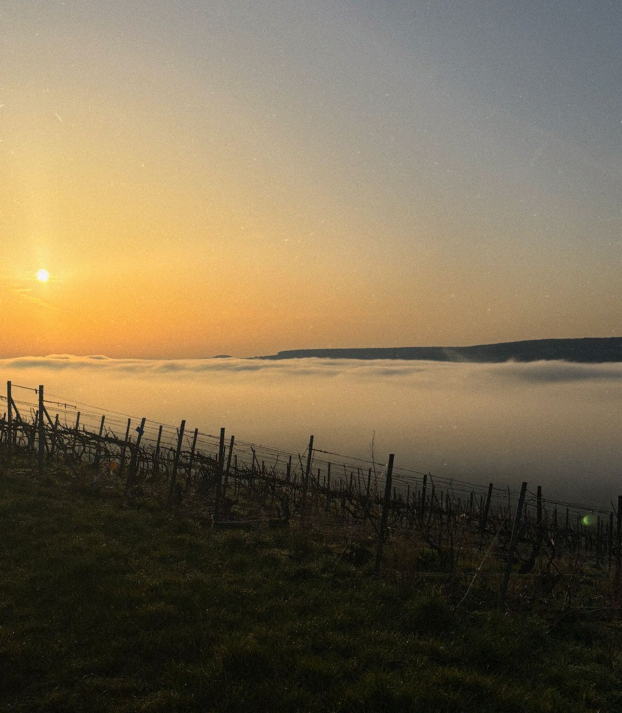
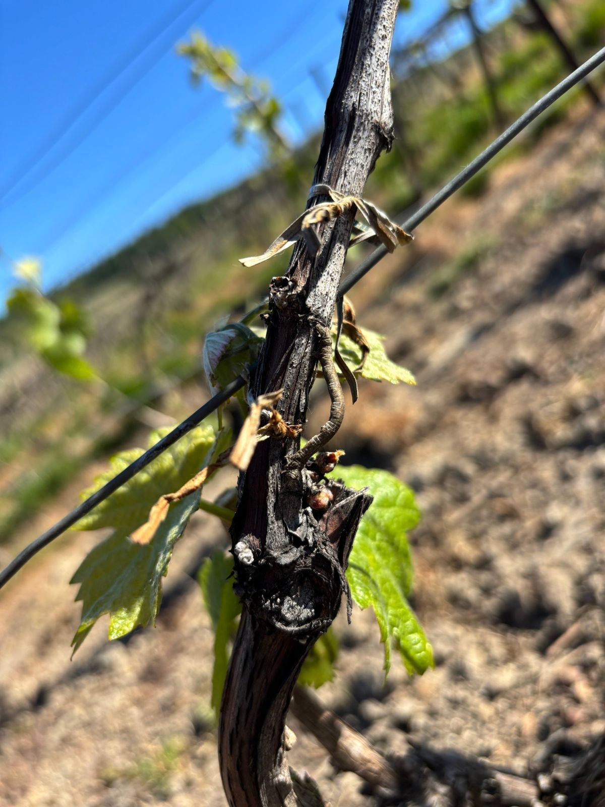
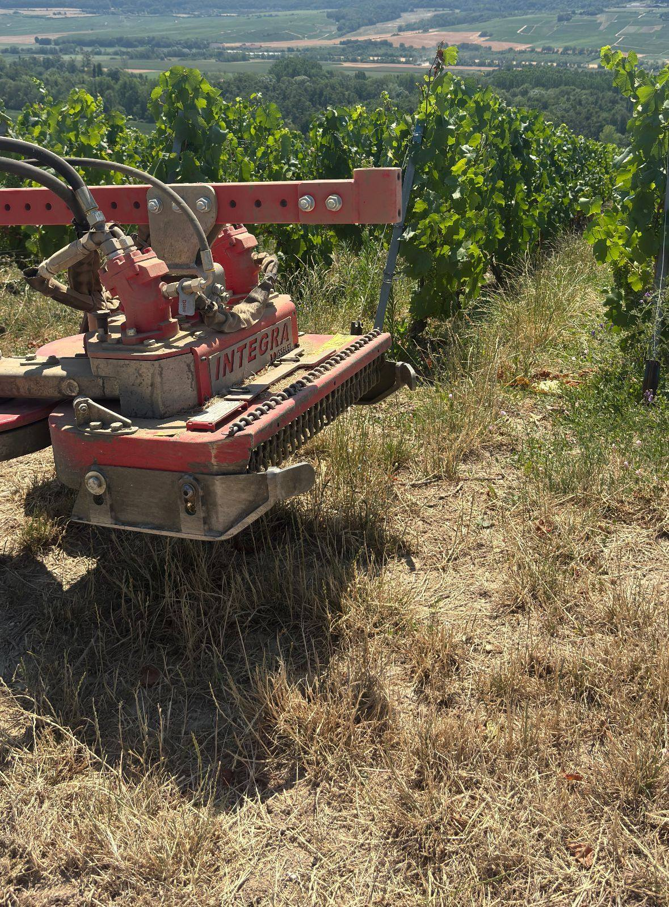
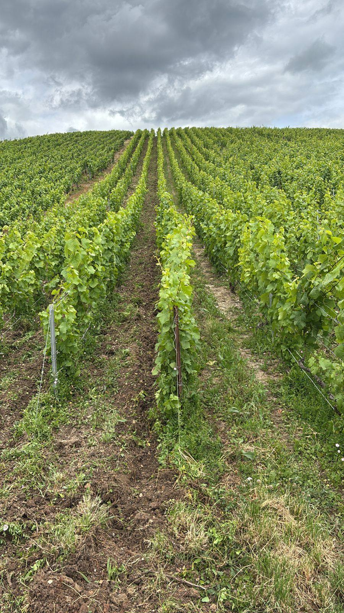
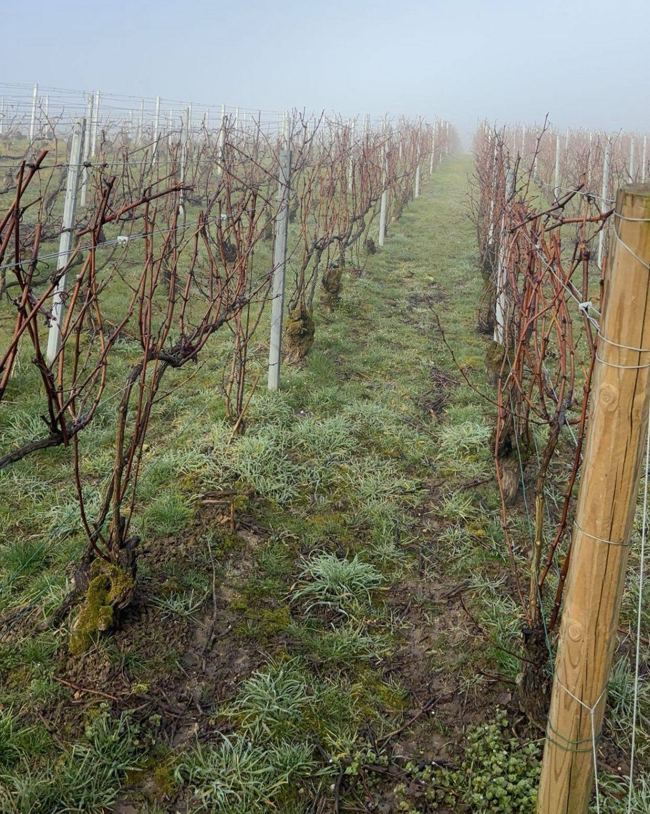
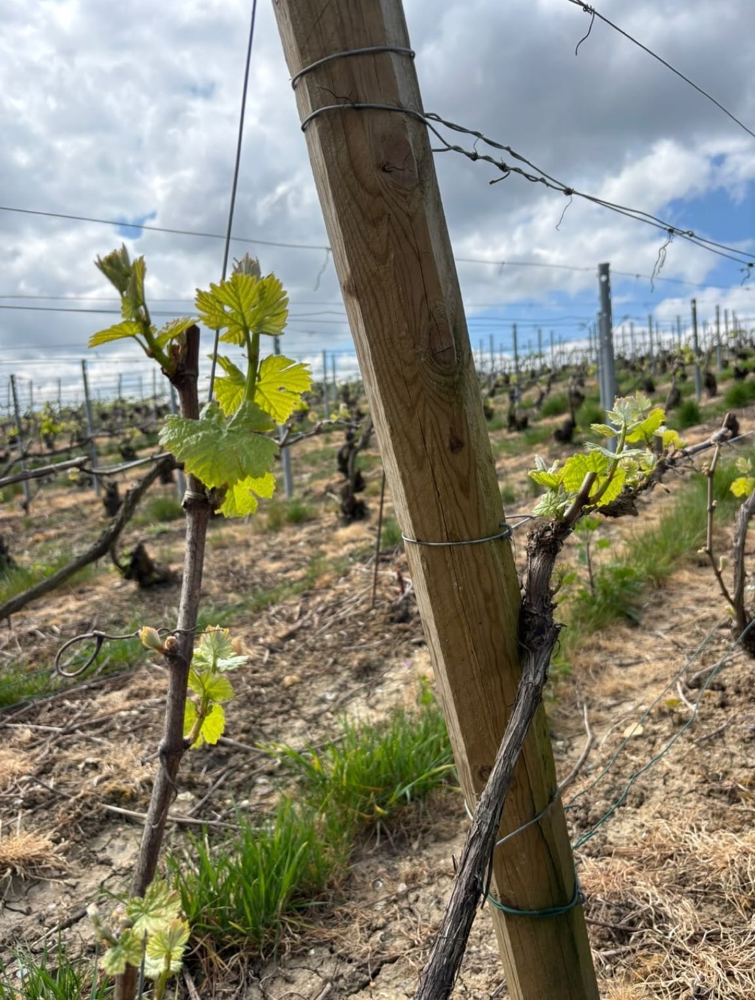
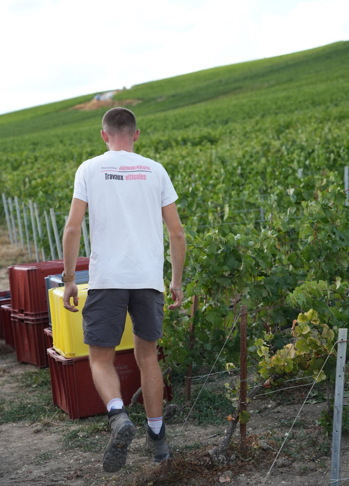
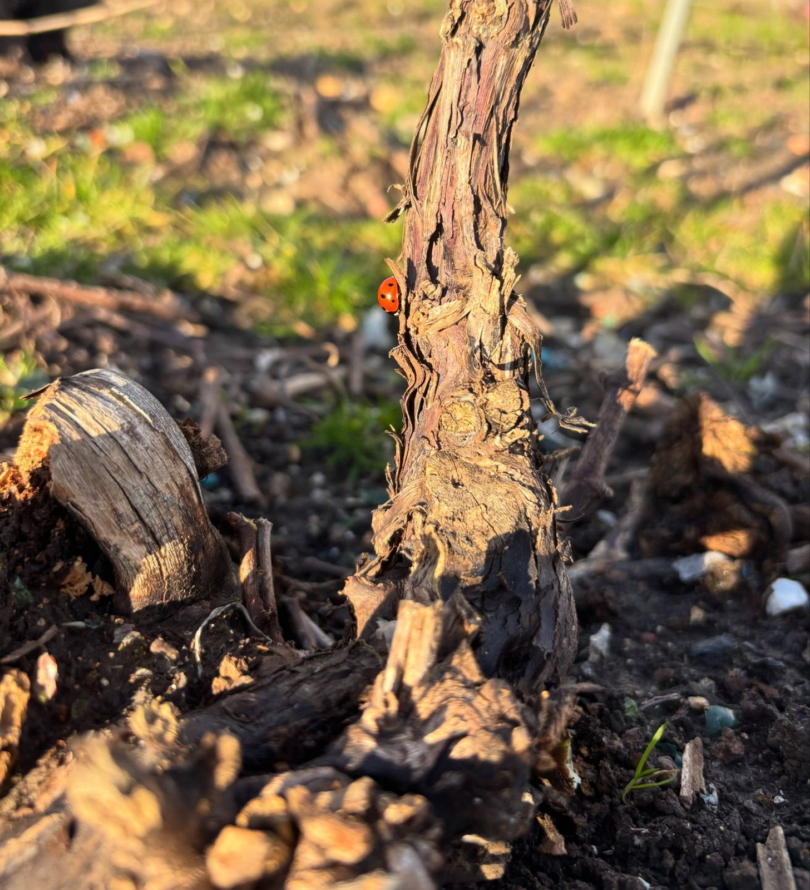
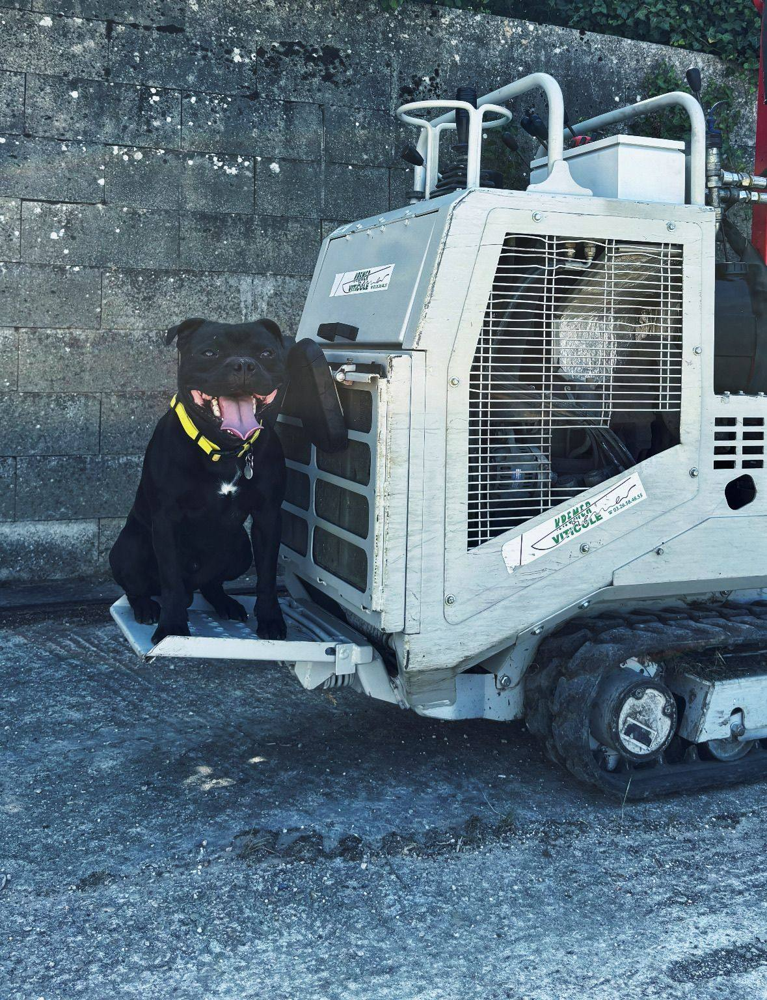

Hiver
Décembre à mars

- TailleTaillée pour fructifier.
- LiageLiée pour guider sa destinée.
- Entretien des abordsPrendre soin aujourd’hui pour récolter demain.
- Visites du parcellaireOn fait le point avec vous sur l’avancement des travaux.

Travaux manuels et mécaniques au chenillard, à Épernay et ses environs.
DécouvrirPrestation Jaquinandi Père & Fils
Nous nous engageons à offrir des services viticoles de haute qualité, adaptés aux besoins spécifiques de chaque vigneron et vigneronne. Nous mettons notre expertise à votre service pour des travaux manuels et mécaniques, de la taille aux vendanges.




Décembre à mars
Avril à juin

Juin à août

Septembre à novembre

Nos prestations
Spécialisés dans les prestations viticoles manuelles et mécaniques, nous vous offrons un service de qualité pour la culture et la récolte de vos vignes.
Taillée pour fructifier, liée pour guider sa destinée.
Ébourgeonnage, relevage et palissage : des gestes précis à chaque cep.
En plein, sous le rang seulement ou passage de canadien : la méthode la plus adaptée à vos besoins.
Tonte de la bande enherbée et de l’inter-cep.

Entretenir, c’est prendre soin aujourd’hui pour récolter demain.

Une expertise tout au long de l’année, au service de vos vignes et de vos exigences.
Avant / après
Faites glisser le curseur pour comparer une parcelle avant et après notre passage.


AvantAprès

Qui suis-je ?
Moi, c’est Lucas. Passionné par la vigne et le vin depuis ma plus tendre enfance, il me semblait évident de travailler dans le vignoble prestigieux de la Champagne.
Après un bac pro Production horticole, un BTS Viticulture-Œnologie et un certificat de spécialisation TMA, j’ai créé Prestation Jaquinandi en octobre 2024.
De nature aidante, il m’est indispensable de mettre mes connaissances et mon savoir-faire au service des autres. Nous intervenons en travaux manuels et mécaniques (chenillard), avec des techniques traditionnelles et modernes, et nous sommes équipés pour tout type de terrain viticole.
Notre méthode
Chaque projet commence par un échange sur vos objectifs et vos besoins, pour garantir le succès de vos récoltes.
De la taille au palissage, jusqu’à l’entretien des abords et la préparation des vendanges.
Des visites régulières de vos parcelles pour vous tenir informé de l’avancement et ajuster nos méthodes si besoin.
Nous suivons vos parcelles toute l’année pour observer le cycle de la vigne et son milieu.
Témoignages
« Grâce à Lucas, ma vigne n’a jamais été aussi bien entretenue. Prestation de qualité ! »
« Un service impeccable et des résultats au-delà de mes attentes. Je recommande sans hésiter ! »
« Son expertise en viticulture est inestimable. Merci pour ton soutien ! »




En Champagne, à Épernay et dans ses environs, jusqu’à 40 km autour d’Épernay. Pour une parcelle plus éloignée, contactez-nous : nous étudions chaque demande.
Oui. Après un premier échange sur vos besoins, nous vous envoyons un devis gratuit et sans engagement.
Taille et liage, travaux en vert (ébourgeonnage, relevage, palissage), travail du sol, tonte, entretien des abords, suivi cultural et soutien lors de la préparation des vendanges.
Oui. Nous sommes équipés pour gérer tout type de terrain viticole, notamment grâce à nos chenillards.
Un rendez-vous pour comprendre vos objectifs, un devis, la réalisation des travaux, puis des visites régulières de vos parcelles pour vous tenir informé et assurer le suivi.
Oui, de la taille d’hiver jusqu’aux vendanges. Nous suivons aussi vos parcelles tout au long de l’année pour observer le cycle de la vigne.
Pas pour le moment. Merci de ne pas envoyer de candidature via le formulaire de contact.
Discutons de vos besoins viticoles